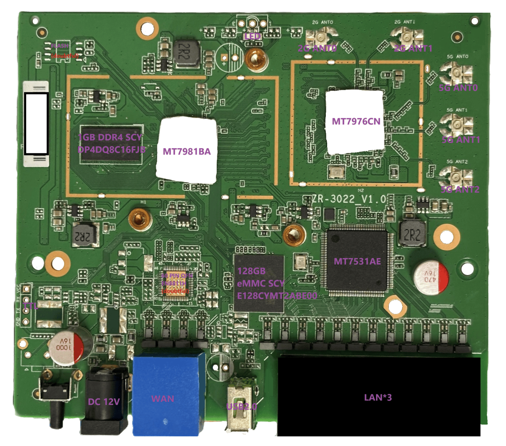

飞利浦 幻域3000 philips hy3000 探索
其实这台机器很早就有 Openwrt 固件和 UBoot 了，只是奸商们不愿意放出来（特指某黄鱼上卖100-200的垃圾价格）。
所以只能重复造轮子了。
然后我从本地代理免费拿了一台。
配置信息
CPU: MT7981BA
RAM: 1GB DDR4 SCY DP4DQ8C16FJB
ROM: 128GB eMMC SCY E128CYMT2ABE00
Switch: MT7531AE
RF: MT7976CN
参考 [1]
飞利浦幻域3000路由器项目白皮书
2.4G和5G天线都是2个3DBi的单频PCB天线
PCB 图

有几个空焊盘，其中有USB的、FLASH的、ETH的
USB2.0 的空焊盘，可以补焊一个 90度弯角测查式USB2.0母座，补两个数据线补0欧的电阻，但是因为是USB2.0的，速率低，干扰小，所以也不补什么电阻电容了，直接一坨锡焊上去就行了。
空的8脚焊盘疑似是 FLASH 的。
空的 60 PIN QFN 焊盘疑似是 EN8811H，在香蕉派 BPI R3迷你开发板上也有类似的芯片。就算知道了，但是没什么用。。。
原版固件过滤 PCDN
将其链接再另一台具备 ADGUARD 的设备上，添加以下规则
1 | data-video.71edge.^$important |
原版固件开启 SSH Telnet
有人反映新版固件里面 sshd 和 telnetd 被删除了，导致无法开启 SSH 和 Telnet。
解包发现 bin\start_cdn.sh 里面
1 | random_char () { |
这个是随机生成一个密码，然后使用 passwd 命令设置密码。以及将 telnetd 重命名为 tn，然后杀掉 telnetd 进程。
但是 openwrt 有一个 ubus 机制
1 | ================= FAILSAFE MODE active ================ |
可以进入 failsafe 模式，使用 passwd 命令修改密码
然后使用 ubus 修改密码
1 | ubus call luci setPassword '{ "username": "root", "password": "test" }' |
参考 Failsafe mode, factory reset, and recovery mode
重设密码后，使用 root 用户登录，将 tn 重命名为 telnetd，然后启用。
参考 [2]
下载文件
下载文件
暂未提供个人技术力有限，还在探索中，故暂时不提供某些文件。
以下是我自行制作的固件和 UBoot
但是没有经过测试，可能会导致设备变砖，请谨慎使用。
固件和 UBoot
fip-uboot
immortalwrt
autoBuild
如果有什么问题，邮件联系我，或者在 GitHub 上提 issue。
TTL 连接
拆机，找到主板上的串口，连接 RX TX GND（可能需要焊接）。
以 CH340G 为例
安装驱动
连接 RX TX GND
打开设备管理器，查看 COM 口号（假设串口号是COM9）
1
start devmgmt.msc
关闭防火墙以及安全软件，使用 Putty、Xbash 或者 HyperTerminal 等串口调试助手
打开串口调试助手，设置波特率115200，数据位8，停止位1，无校验位，串口COM9
选择对应的 COM 口，点击打开串口
连接成功后，打开路由器电源
备份固件
暂未完成… 因为有人已经做了，我就不做了，只是说一下大致的步骤
1 | # 查看分区信息 |
使用 dd 命令备份分区
1 | # dd if=/dev/mmcblk0boot0 of=/mnt/mmcblk0p8/mmcblk0boot0_bl2.bin conv=fsync |
用命令或者 winscp、xshell 等工具传输到本地
分区信息
原厂分区信息
1 | guid/type=PartitionTypes.LinuxFilesystem first-block=0 size=34 name=gpt |
提取 dts
先取得 kernel.bin，
extract-dtb
1 | git clone https://github.com/PabloCastellano/extract-dtb.git |
转换 bin 到 dtb
1 | ./extract-dtb/extract-dtb.py kernel.bin |
得到的较大的文件就是需要的 dtb 文件（02_xxx.dtb）
1 | sudo apt install device-tree-compiler |
1 | dtc -I dtb -O dts -o mt7981-ph-hy3000.dts './mt7981-ph-hy3000.dtb' |
原厂的参数基本是16进制的，但是要适配 Openwrt 的话，必须是10进制的，所以需要转换一下
参考 [5]
制作好的 dts
HY3000_DTS
刷写 UBOOT
fip.bin 为某个机子的 uboot;mtk_uartboot 是一个通过ttl接口，把uboot通过ttl传入，ram的一种启动方式，通过mtk_uartboot启动7981设备的时候除了需要uboot还需要BL2，这个BL2和刷机用的BL2不一样，这个是ram管理用的BL2，刷机是Flash用的BL2，请不要搞混。BL2 是用于关闭安全引导的，gpt.bin 是分区表。
这个设备没有安全引导，所以无需刷写 BL2，直接刷 fip.bin 即可。
1 | .\mtk_uartboot\mtk_uartboot.exe -s COM9 -p .\mtk_uartboot\mt7981\mt7981-ddr4-bl2-ram-boot.bin -a -f .\fip\mt7981_philips_hy3000-fip.bin --brom-load-baudrate 115200 --bl2-load-baudrate 115200 |
或者使用脚本 ph-hy3000.bat
1.运行命令后会出现等待握手信息
1 | Using serial port: COM9 |
2.然后路由器上电开机，握手成功CMD会输出sending payload信息开始发送bl2
1 | hw code: 0x7981 |
3.发送完成加载bl2会输出信息同时开始发送fip
1 | Checksum: 0x3c82 |
此时在上传fip，600KB的fip使用1500000波特率只需要几秒钟，低波特率则大概45秒。此时如果需要进入uboot webui可以直接按住reset按键不放，等待uboot指示灯闪烁并进入uboot。如果没有按reset会直接启动固件，进入固件再恢复刷砖的分区也行。
4.fip加载完后输出
1 | FIP sent. |
此时程序已经执行完，已经加载uboot，如果不进行打断将会直接启动固件。
参考 [9]
所以需要立即关闭cmd窗口，同时其他ssh工具连接串口(比如 putty,XShell)，进入后使用键盘上下键移动光标
晚了打断启动，可以试试按路由复位键，重复以上步骤
注意:ttl加载uboot，可能有个问题，就是你来不及打开com口，uboot就跳去引导固件了，启动不成功又去加载你闪存的uboot,这就成了个环，你又不能提前打开com口。你又不知道。所以试试安住reset键，再给路由器上电。
此时输出
1 | MT7981> |
表示已经进入uboot命令行
1 | MT7981> bootmenu |
进入uboot菜单
5.进入uboot webui
进入路由器进入uboot后，电脑设置IP为192.168.1.254，子网掩码为255.255.255.0
先ping一下路由器，确认连接正常
1 | ping 192.168.1.1 |
如果ping不通，检查网线是否连接好，或者路由器是否正常工作。
先刷写 uboot
192.168.1.1/uboot.html 上传 mt7981_philips_hy3000-fip.bin
然后刷 gpt（可选）
192.168.1.1/gpt.html 上传 Philips hy3000-PMBR-gpt.bin
刷新固件
uboot 下，进入 192.168.1.1 上传固件
恢复原厂固件
暂未完成…
参考 [10]
使用 dd 命令
暂时没有回到原厂的想法，毕竟一个PCDN，没什么用。
定制环境搭建
使用 VirtualBox 搭建 Ubuntu 64 位虚拟机
推荐使用 2204，其他版本也可以
其他虚拟机也可以，VMware 也可以
跳过自动安装，选择 Try Ubuntu 进入系统
一切默认即可，最小安装
可以先试用系统，更改分辨率，然后再安装系统，这样比较好操作
安装完重启虚拟机，安装增强功能。
共享剪切板与拖放改为双向，共享文件夹改为一个方便的目录，挂载点改为 /home/username/shareDir，自动挂载，固定分配
关闭屏保、息屏以及省电相关设置
apt 升级（非必须）
1 | sudo apt update |
恢复默认源（非必须）
参考 [11]，有时候系统会默认只有国内源，然而有一些包没有，就需要恢复默认源（追加即可），完成后进行上一步 apt 升级。
1 | sudo gedit /etc/apt/sources.list |
安装软件包
1 | sudo apt install curl |
配置环境
1 | sudo bash -c 'bash <(curl -sL https://build-scripts.immortalwrt.eu.org/init_build_environment.sh)' |
定制 immortalwrt 固件
克隆仓库
1
git clone --depth=1 https://github.com/hanwckf/immortalwrt-mt798x.git
进入目录
1
cd immortalwrt-mt798x
获取最新 feed
1
./scripts/feeds update -a
如果出现报错（即有error或者xx停止等字样） 参考 [15]
1
2
3
4
5
6
7
8
9Build dependency: Please install ncurses. (Missing libncurses.so or ncurses.h)
Build dependency: Please install a static zlib. (Missing libz.a or zlib.h)
Build dependency: Please install the openssl library (with development headers)
Build dependency: Please install GNU 'awk'
Build dependency: Please install the Subversion client当前编译环境缺少依赖组件
（可选，出现问题后使用）可一次性全部安装所需依赖组件，输入:
1
sudo apt-get install gcc g++ binutils patch bzip2 flex bison make autoconf gettext texinfo unzip sharutils subversion libncurses5-dev ncurses-term zlib1g-dev subversion git-core gawk asciidoc libz-dev zlib1g-dev libssl-dev
链接 feed
1
./scripts/feeds install -a
选择配置
1
cp -f defconfig/mt7981-ax3000.config .config
使用
make menuconfig选择编译选项1
make menuconfig
配置选项
- Target System 选择
MediaTek Ralink ARM - Subtarget 选择
MT7981 - Target Profile 选择
philips-hy3000，但是目前没有这个选项，查看### 适配 philips-hy3000 - Kernel module -> File systems -> 添加 ext4、f2fs、brtfs 支持
- 其他选项根据需要选择
<save>保存配置<exit>退出配置
- Target System 选择
编译固件
1
make -j$(nproc) V=s
-j$(nproc)表示使用所有 CPU 核心进行编译-j1表示使用单核编译-j8表示使用八核编译V=s表示显示详细编译信息V=sc表示显示编译信息和警告V=99表示显示所有编译信息
如果编译过程中出现错误，或者使用 Ctrl+C 中断编译，可以使用
make clean清理编译缓存，然后重新编译。参考 [16]
linux 工具 quilt 可能会执行相当长时间，不要以为卡住了，不要中断编译，耐心等待。
编译完成后，固件文件在 bin 目录下
适配 philips-hy3000
对于没有配置的情况，我们需要手动添加配置文件
所以需要拆机，查看具体的硬件信息，可以查看 ## 配置信息 中的配置
区分单臂路由，看
dts中的gmac，单臂路由器只有一个gmac，其他路由器有两个gmac。或者拆开看主板上的PCB布局
所以寻找一个类似的路由器，在其基础上进行修改，比如 SL-3000 这款机型就比较接近
有关 dts 的部分在前文中已经提到过了，这里就不再赘述了
进入
target/linux/mediatek/files-5.4/arch/arm64/boot/dts/mediatek/目录创建mt7981-philips-hy3000.dts以mt7981-sl3000.dts为基础，进行修改需要修改的地方有：
key、leds、gsw、eth、hnat
这个设备只有红、绿两种灯
gpio address(10) level led:red 8 high led:green 13 low key:reset 1 low key:mesh 0 high 这里没有用原厂的网络接口配置方法，使用了
mt7981-360t7-base.dtsi的配置方法参考 [17]
还有就是 USB，即xhci，出场主板上就没有焊接，可以不需要，需要配的话就照着2.0的来就行了
1
2
3@xhci {
status = "okay";
}打开
target\linux\mediatek\mt7981\base-files\etc\board.d\02_network文件根据 factory 里面的信息
1
2
3
4
5
6
7
8
9
10
11
12label=wan=E0:FF:FF:FF:FF:3C
ra0=E0:FF:FF:FF:FF:3D
rax0=E0:FF:FF:FF:FF:3E
eth1=E0:FF:FF:FF:FF:3F
eth2=E0:FF:FF:FF:FF:40
eth3=E0:FF:FF:FF:FF:3B
eth4=E0:FF:FF:FF:FF:3C
sn=PH0XXXXXXXXX9
0x74 = E0:FF:FF:FF:FF:3D
0x10000 = PH0XXXXXXXXX9适配的接口信息
02_network1
2
3
4
5philips,hy3000)
ucidef_set_interfaces_lan_wan "eth0" "eth1"
ucidef_add_switch "switch0" \
"1:lan" "2:lan" "3:lan" "0:wan" "6u@eth0" "5u@eth1"
;;所以添加网络mac信息
1
2
3
4
5philips,hy3000)
lan_mac=$(mmc_get_mac_binary factory 0x74)
wan_mac=$(macaddr factory $lan_mac 1)
label_mac=$wan_mac
;;打开
target\linux\mediatek\mt7981\base-files\lib\preinit\90_extract_caldata文件函数do_extract_caldata()中添加philips-hy3000的信息打开
target\linux\mediatek\mt7981\base-files\lib\upgrade\platform.sh文件函数platform_do_upgrade()、platform_check_image()中添加philips-hy3000的信息打开
target\linux\mediatek\image\mt7981.mk文件添加适配信息 参考[18]1
2
3
4
5
6
7
8
9
10
11define Device/philips_hy3000
DEVICE_VENDOR := Philips
DEVICE_MODEL := HY3000
DEVICE_DTS := mt7981-philips-hy3000
DEVICE_DTS_DIR := $(DTS_DIR)/mediatek
SUPPORTED_DEVICES := philips,hy3000
DEVICE_PACKAGES := $(MT7981_USB_PKGS) f2fsck losetup mkf2fs kmod-fs-f2fs kmod-mmc \
luci-app-samba4
IMAGE/sysupgrade.bin := sysupgrade-tar | append-metadata
endef
TARGET_DEVICES += philips_hy3000打开
defconfig\mt7981-ax3000.config文件添加philips-hy3000的信息1
2CONFIG_TARGET_DEVICE_mediatek_mt7981_DEVICE_philips_hy3000=y
CONFIG_TARGET_DEVICE_PACKAGES_mediatek_mt7981_DEVICE_philips_hy3000=""
定制 uboot
1 | git clone git clone https://github.com/hanwckf/bl-mt798x.git |
UBoot 有 2022 与 2023 版本，根据自己的需求选择
以相近设备的配置为基础进行修改
atf-20220606-637ba581b\configs\mt7981_philips_hy3000__defconfiguboot-mtk-20220606\configs\mt7981_philips_hy3000_defconfig
修改 uboot-mtk-time/arch/arm/dts 中的类似机型 dts 文件
参照 openwrt 的 dts 文件进行修改
build.sh 中修改相关信息，比如需要编译的版本 22/23，如果编译22版，则把23版注释掉
然后编译
1 | SOC=mt7981 BOARD=philips_hy3000 ./build.sh |
编译后的文件在 output 目录下
GPT&BL2
参考 [21] [22] [23] [24] [25] [26]
bl-mt798x 项目中
在 atf/tools/dev/gpt_editor 目录下存在 mtk_gpt.py 脚本文件
编写相应的 gpt.json 分区表
参考 [10:1]
使用该脚本即可生成对应的 gpt.bin 文件
在对应设备的 deconfig 文件中添加 CONFIG_TARGET_ALL_NO_SEC_BOOT=y
然后编译 bl-mt798x 项目，生成的 bl2.bin 文件在 output 目录下
这台设备不需要 BL2。
新的 ATF arm-trusted-firmware
这是复刻自 ARM-software 仓库的一个分支
主线 FIT
暂未完成…
参考 [24:1] [27] [28] [29] [30] [31]
在 oss 项目 [31:1] 观察到 dts 文件中有 mtd 相关的配置
1 | mtd-layout { |
但是很显然，这是 nand 的配置
同时观察到 atf deconfig 文件中
1 | - CONFIG_TARGET_FIP_NO_SEC_BOOT=y |
随后，我在 openwrt 项目的github页面找到了一个设备的 dts mt7981b-unielec-u7981-01-emmc.dts
里面关于 emmc 的处理是这样的
1 | &mmc0 { |
我不能确定这是否就是 emmc 主线 FIT 的处理方式，然后我找到了 mt7981b-cmcc-rax3000m-emmc.dtso
进行了确认，这种写法确实是 emmc 的处理方式。
可以确定，即便编写了相关 dts，仍然不能够支持主线 FIT 的 ibt 固件，需要刷下对应 preloader
在 openwrt 的下载页面 Index of (root) / releases / 24.10.0 / targets / mediatek / filogic / 可以找到很多 preloader 的固件
我不太确定是否使用支持 FIT 的 dts 进行编译，就可以自动生成 preloader 的固件
我在openwrt官方仓库里找到了该提交 423186d
该提交详细展示了如何适配 FIT
以及 immortalwrt 的仓库找到了该提交
76bc820 mediatek: add CMCC RAX3000M eMMC custom U-Boot layout
38e8762 mediatek: add ubootenv support for cmcc rax3000m emmc/nand version
d17eb36 arm-trusted-firmware-mediatek: add emmc/spim-nand ddr4 build for mt7981
eb105e5 mediatek: convert eeprom/macaddr to nvmem format for cmcc rax3000m
38e8762 mediatek: add ubootenv support for cmcc rax3000m emmc/nand version
可以推测，进入主线 FIT 的设备将会在编译的时候自动生成 bl31-uboot,preloader
不过好像这个 FIT 也没什么用，懒得研究了。
自动化
参考 [34]
fip-uboot
Actions-OpenWrt
复刻到自己的 GitHub 上，运行 Actions 即可。
超频
暂未完成…
据说这颗芯片具有较大的超频潜力。
就是制作超频 BL2。
需要给 Openwrt 源码打 patch
工程量较大，暂时搁置。。。
梅林的研究
在该项目中 asuswrt-merlin.ng
看到支持了 AX57_Go，这也是一款 mt7981 的路由器
但是由于 hy3000 这台设备是 emmc 的
梅林好像也没看见哪台设备适配 emmc
所以暂时不考虑
其实我挺喜欢梅林的，以前一直用的博通的路由器，买了几台华硕，组 mesh 很方便，配合梅林固件使用很省心，不用一直折腾，直到 WIFI6 时代，我也买了一台 RAX80，但是翻车了，现在博通的路由器也不行了，又贵又发热，还不开源。
后续
翻车了，后来怎么了，就是他们搞 PCDN 的要收回去升级，然后不给我了。。。
有小道消息说是 PCDN 的程序写的太烂，跑不起来，赚不到钱，我看了一下，原厂固件里有一个
start_yh的二进制，估计就是这个程序了，确实看起来很简陋
故此无限期暂停对此的研究。
参考
飞利浦幻域3000首拆？？？？ ↩︎
微加云（以及其他openwrt的设备）破解后台密码 ↩︎
360T7官方固件分区备份及刷回官方固件教程 ↩︎
360 T7 路由器 开启telnet及uboot控制台方法 ↩︎
MT7986使用MT7531 Switch 的Device Tree 探討 ↩︎
飞利浦 幻域 3000 Philips hy3000 TTL刷机 救砖教程 ↩︎
JCG Q30 PRO救砖教程，MTK mt798x 系列基本通用 ↩︎
MediaTek Filogic 系列路由器串口救砖教程 ↩︎
诺基亚贝尔EA0326GMP (AX3000) TTL救砖时TFTP无效U-Boot console用loady模式刷回uboot ↩︎
Ubuntu18.04 默认源 恢复默认源 恢复备份源 ↩︎
immortalwrt-mt798x ↩︎
immortalwrt-mt798x项目介绍 ↩︎
OpenWRT下载与编译 ↩︎
openwrt编译笔记，有些技巧是自己试验出来的，很多人死也不肯说 ↩︎
讨论市售MT7981/MT7986/MT7988方案的GMAC到LAN连接的差异 ↩︎
Network configuration /etc/config/network ↩︎
bl-mt798x ↩︎
mt798x uboot 功能介绍 ↩︎
mtk 开源U-Boot ATF配置和编译教程 ↩︎
arm-trusted-firmware ↩︎
【求助】关于刷入支持主线的u-boot的问题 ↩︎
【2023-11-07】CMCC RAX3000M EMMC 64G mt7981 算力版 固件+ubootshu小白防砖教程 ↩︎
【教程】rax3000m emmc刷机 支持硬件QOS MT7981到底值不值 ↩︎
【网络】 bpi-r4, sd卡uboot，支持web刷写openwrt主线以及237固件！ ↩︎
bl-mt798x-oss ↩︎
移动RAX3000M 64G EMMC 算力版开启ssh以及刷uboot和刷机教程 ↩︎
【2023-11-07】CMCC RAX3000M EMMC 64G mt7981 算力版 固件+ubootshu小白防砖教程 ↩︎
U-Boot/Linux设备树简明使用手册 ↩︎
DTS、DTSO、DTBO三种文件的关系及编译流程 ↩︎
Actions-OpenWrt ↩︎
OpenWrt One 路由器（MT7981，主线op）超频bl2编译教程 ↩︎
T798X CPU超频1.65G/一键修改无线最大功率方法 ↩︎
Openwrt Patch 制作及打补丁 ↩︎
如何给OpenWrt的源码打patch ↩︎
【openwrt学习笔记】新patch的制作和旧patch的修改 ↩︎